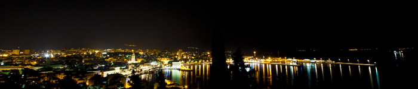
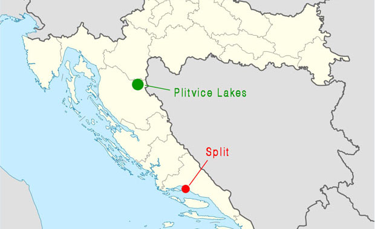
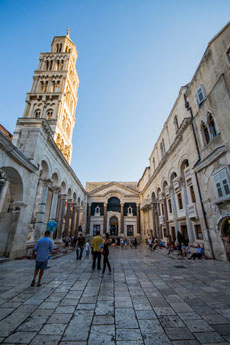

About Split
It's located at the Adriatic Sea and has a population of 180 000 citizens. The city is built around an ancient Roman palace. The city core including the amazing palace is one of UNESCO's World Heritages.
• • •
History
The history of Split is quite extensive. The origin of Split goes back to a Thracian village located 5 km north-east from the current city. The village became a Greek city approximately 300 BC and during the first century BC it became a roman colony known as Salonae (today Solin).
The Roman Emperor Diocletian, who was born in Salonae, built a palace at the nearby coast (where Split is located today). He then abdicated and moved into his big palace 305 BC. The palace created a suburb to Salonae, but after Salonae got plundered in the early 7th century this suburb replaced Salonae's function and eventually became Split as we know it today.
Split has belonged to many different powers over the years. Some of them are Hungary, Venice, Austria, Napoleon and Yugoslavia. When Yugoslavia fell in 1991 the city became a part of Croatia.
Location
Split is located at the coast of Croatia.
Made by: NordNordWest - CC: BY-SA
Climate
The average temperature never go under 0°C which means that snow is very rare. In July and August the average temperature is ca 25°C. The highest amount of rainfall is during November and December. The lowest amount of rainfall is during July.
Activities
In Croatia there is a bunch of stuff you can do, you can either go hiking, sailing, look at old towns or just hang out at the beach.
The sailing in Croatia is especially good because of all the islands that prevent the bad weather from arriving in to shore. There are other water activities, for example Jet Ski, motorboat etc. All these activities are for rental in most of the coastal towns. Split and Dubrovnik are the most popular ones.
In split you can on daytime go into the old palace and look at all the fabulous shops that are located there, you can also listen to the musicians by the big church. You can rent a scooter and go away to the small beaches around split or just hang out at the local ones. Split has a quite big nightlife as well for being such a small town.